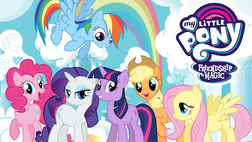

Incase you were unaware, there are 12 Zodiac Signs. They are...
Aquarius, Aires, Taurus, Virgo, Leo, Sagittarius, Libra, Cancer, Scorpio, Pisces, Capricorn, and Gemini
And incase you never watched the best kids show ever, there are six main ponies.

Now, click on the name you want to learn about! If the ponies doesn't resemble your traits find a different one that does!